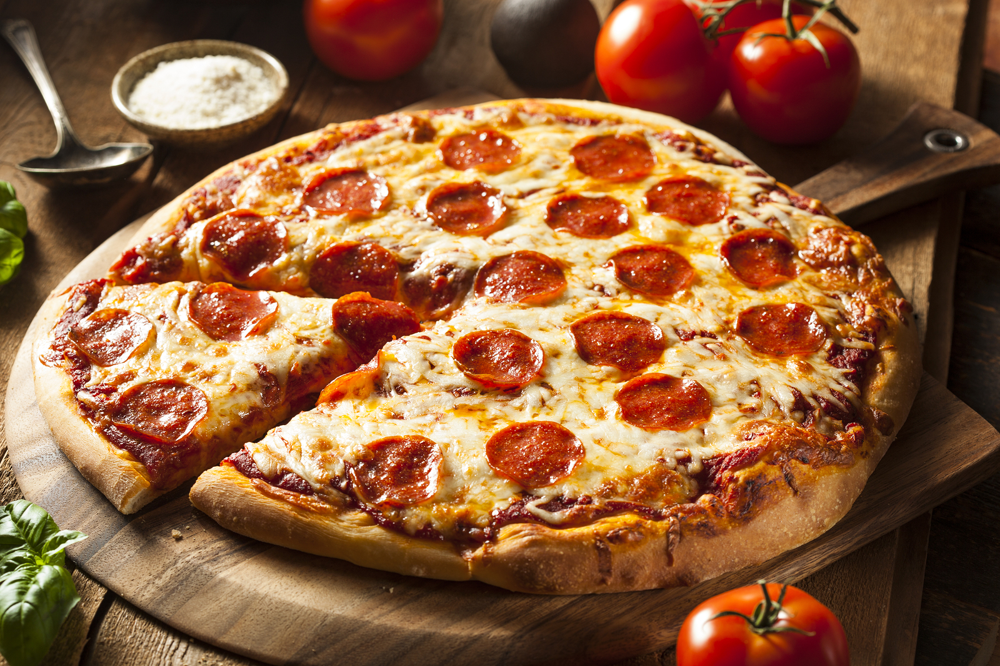

Authentic Pepperoni Pizza.
A passionate tango of taste, a tribute to the bold and the brave.
Ingredients.
Dough
- 1 1/3 cups water.
- 40 - 60g (1.4 - 2.1 oz) salt
- 3g (1/2 tsp) fresh yeast
- 3 1/4 cups all all-purpose flour, or more as needed
Sauce
- 1/2 cup water
- 12 ouce Tomato paste
- 1 tsp dried oregano, crushed
- 1 tsp dried basil, crushed
- 1/2 tsp garlic powder
- 1/2 tsp onion powder
- 1/2 tsp salt
- 1/2 tsp sugar
- 1/2 tsp black pepper
Topping
- 1 cup of shredded mozzarella cheese, or more to taste
- 6 ounces of Pepperoni, or more to taste
Directions.
- Preheat the oven to 425 degrees F (220 degrees C). Grease two 12-inch pizza pans.
- Make sauce: Whisk together water, tomato paste, oregano, basil, garlic powder, onion powder, sugar, salt, and pepper in a medium bowl until smooth. Set aside.
- Make crust: Combine 2 cups flour, yeast, sugar, and salt in a large bowl. Add warm water and oil; mix until well blended, about 1 minute. Gradually add remaining flour, a little at a time, until a soft, sticky dough forms.
- Transfer dough to a floured surface; knead until dough is smooth and elastic, about 4 minutes. Add more flour as needed.
- Divide dough in half. Lightly flour your hands, then pat each piece of dough onto the prepared pizza pans.
- Top dough with sauce, cheese, and pepperoni.
- Once at least six hours have passed, take a ball of dough, place it on a lightly floured surface.
- Bake in the preheated oven until crusts are browned and cheese is bubbly, 18 to 20 minutes. Rotate pizza pans between the top and bottom oven racks halfway through baking.